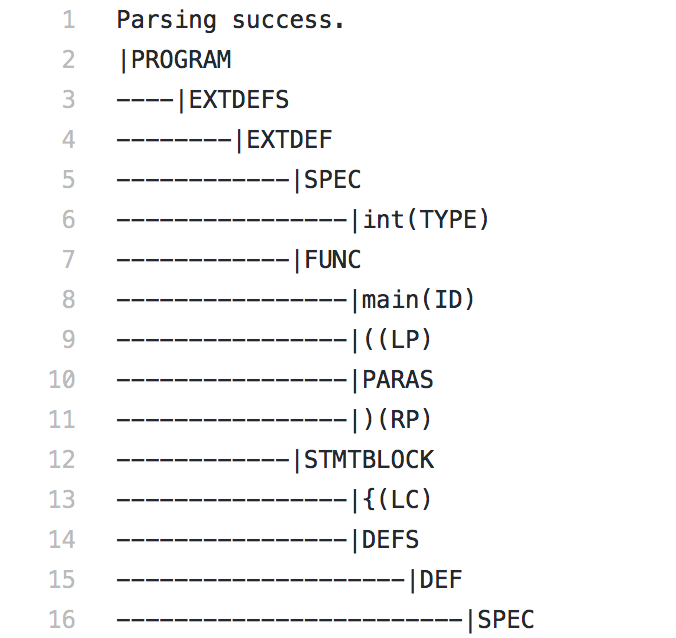
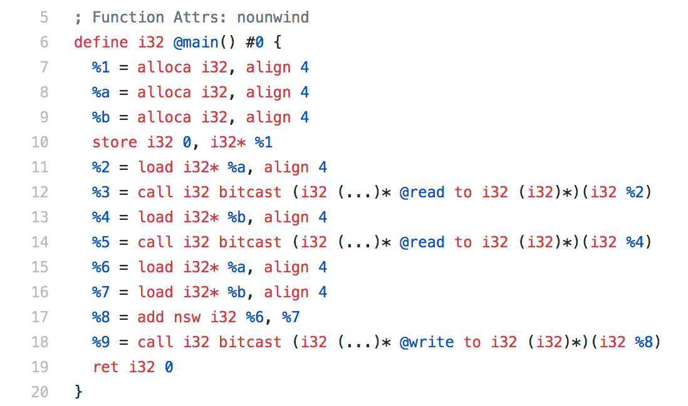

Small-C Compiler Simulator
Jiyuan Shen
My Work
♣ Designed and implemented a Compiler Simulator for Small-C Language, which can conduct lexical analysis, syntax analysis, semantic and syntac checking and intermediate code translation for LLVM.
Method
Structure Overview
This project includes two implementation stages: Lexical Analyzer and Code Generator. For the first one, Lexical Analyzer, work as front end, should parse the sentences to intermediate parse tree. For the second one, Code Generator, work as back end, should return a LLVM assembly program which can be run on LLVM.
Lexical Analyzer
Lex and Yacc are used to intermediate parse tree. Define a tree node structure in the header file. Both of lex file and yacc file should include this structure to deliver terminals. After lexeme analyzing in lex, the terminals are delivered to yacc to create the parse tree through defined grammar rules. After lexical analyzer, we can achieve a parse tree as the intermediate representation.
Example Parse Tree [sample output]

Code Generator
Do a traversal on the intermediate parse tree by pre-ordering. And for each grammar, corresponding translation actions should be applied and implemented. We then should conduct implementations as variable declaration and initialization, function declaration and calling, expression encoding, input/output and branch. For register allocation, it is a initial implementation to recount the register every time we encounter with FUNC rule. Then in the semantic analysis stage, checkings are completed step by step: first, variables and functions should be declared before usage; second, variables and functions should not be re-declared; third, reserved words cannot be used as identifiers; fourth, program must contain a function int main() to be the entrance; fifth, break and continue can only be used in a loop; sixth, right-value cannot be assigned by any value or expression. Please refer to detailed implementation and explanations in my reference documentations.
Example LLVM Code [sample output]

References
[1] Online Manuals: The Lex and Yacc [webpage]
[2] The LLVM Compiler Infrestructure [webpage]
[3] Jiyuan Shen, Small-C Compiler Simulator Code [git]
[4] Jiyuan Shen, Small-C Compiler Simulator Report [pdf]